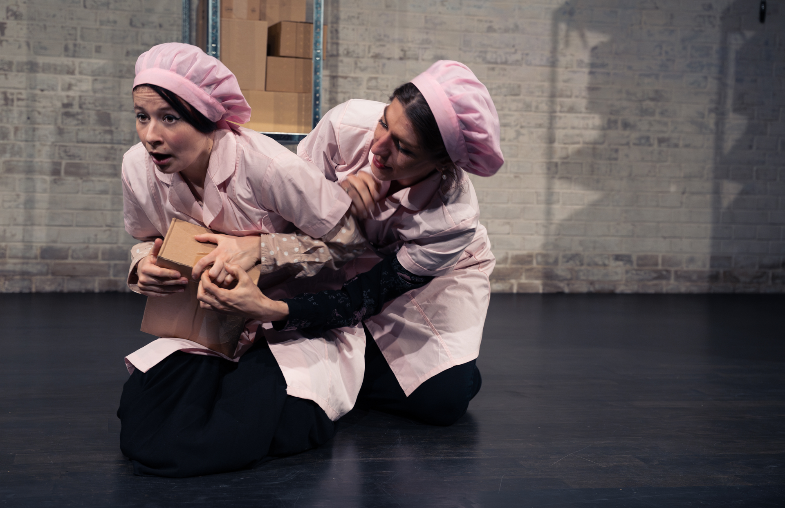
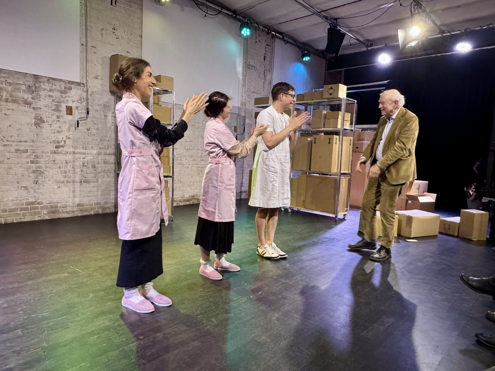

Über die Produktion
2025 präsentierte die Freie Bühne Basel im Theater Bau 3 Basel an zwei Wochenenden das Stück «Die Dritte Kolonne» von Franz Hohler. Das skurrile, tragisch‑komische Werk ist trotz Uraufführung 1979 inhaltlich hochaktuell.
Im Zentrum stehen zwei Frauen, Kolleginnen in einem Medikamentenumschlag. Ihre Strategien im Umgang mit psychischer Gesundheit entwickeln sich in gegensätzliche Richtungen – zwischen vollständiger Anpassung und dem Ausbruch aus Routinen. Die feine, sarkastische Feder Hohlers eröffnet dabei Raum für Nachdenken und für Lachen.
Besetzung
- Die Ältere: Anja Schlegel
- Die Jüngere: Carolin Pfäffli
- Die Gegensprechanlage: Silvio Bruder
Team
- Regie: Jasmin Wenger
- Produktionsleitung: Benjamin Zimber
Impressionen




Hinweis: kolonne4.HEIC wird von vielen Browsern nicht angezeigt. Wenn du mir eine kolonne4.jpg (echtes JPEG) gibst, ersetze ich sie sofort.